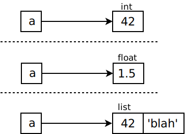
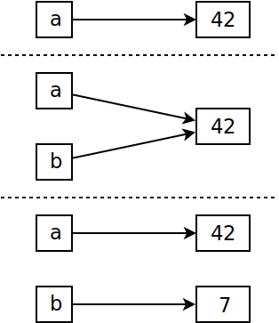

Variables¶
Variables (1)¶
A variable is a name for … something
Something has a type
… but its name hasn’t
>>> a = 42
>>> type(a)
<class 'int'>
>>> a = 1.5
>>> type(a)
<class 'float'>
>>> a = [42,'blah']
>>> type(a)
<class 'list'>
|
 |
{kind=link}
Variables (2)¶
Python is a “dynamic language” (whatever that means)
Names have no type
Created when first assigned
⟶ Runtime error when accessed but not yet there
… as opposed to compiled languages (whatever that means)
Naming rules: just like most other languages
Start with Letters (Unicode since Python 3, ASCII in Python 2) or underscore
Numbers in the following characters
Case sensitive
Assignment Fun¶
a, b, c = 1, "Eins", 1.0
a, b = b, a # "swap"
Tuple unpacking
Important concept throughout the entire language
⟶ later
a = b = c = 1
Assignment is right associative
⟹
a, b, care assigned1
Assignment Details¶
More than one ever wants to know …
Day-to-day programming does not need to know
Good to know when something goes wrong
Only valid for immutable types (
int,float,str)
a = 42
b = a
b = 7
Or equivalently …: a = 42
b = 42
b = 7
|
 |